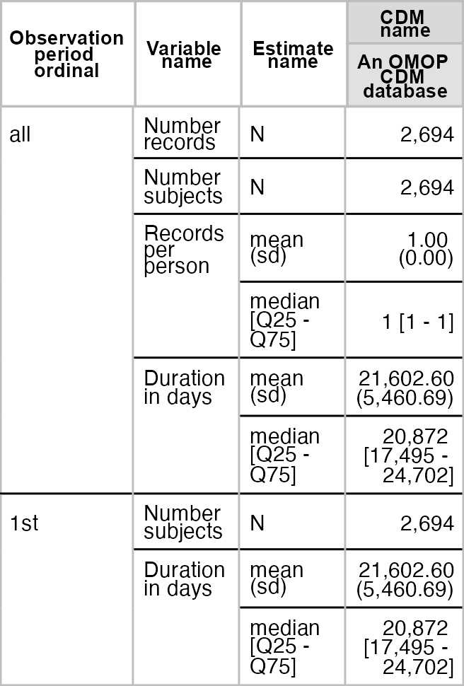

The goal of OmopSketch is to characterise and visualise an OMOP CDM instance to asses if it meets the necessary criteria to answer a specific clinical question and conduct a certain study.
Installation
You can install the development version of OmopSketch from GitHub with:
# install.packages("remotes")
remotes::install_github("OHDSI/OmopSketch")Example
Let’s start by creating a cdm object using the Eunomia mock dataset:
library(duckdb)
#> Loading required package: DBI
library(CDMConnector)
library(dplyr, warn.conflicts = FALSE)
library(OmopSketch)
con <- dbConnect(duckdb(), eunomiaDir())
cdm <- cdmFromCon(con = con, cdmSchema = "main", writeSchema = "main")
#> Note: method with signature 'DBIConnection#Id' chosen for function 'dbExistsTable',
#> target signature 'duckdb_connection#Id'.
#> "duckdb_connection#ANY" would also be valid
#> ! cdm name not specified and could not be inferred from the cdm source table
cdm
#>
#> ── # OMOP CDM reference (duckdb) of An OMOP CDM database ───────────────────────
#> • omop tables: person, observation_period, visit_occurrence, visit_detail,
#> condition_occurrence, drug_exposure, procedure_occurrence, device_exposure,
#> measurement, observation, death, note, note_nlp, specimen, fact_relationship,
#> location, care_site, provider, payer_plan_period, cost, drug_era, dose_era,
#> condition_era, metadata, cdm_source, concept, vocabulary, domain,
#> concept_class, concept_relationship, relationship, concept_synonym,
#> concept_ancestor, source_to_concept_map, drug_strength
#> • cohort tables: -
#> • achilles tables: -
#> • other tables: -Snapshot
We first create a snapshot of our database. This will allow us to track when the analysis has been conducted and capture details about the CDM version or the data release.
summariseOmopSnapshot(cdm) |>
tableOmopSnapshot(type = "flextable")
Characterise the clinical tables
Once we have collected the snapshot information, we can start characterising the clinical tables of the CDM. By using summariseClinicalRecords() and tableClinicalRecords(), we can easily visualise the main characteristics of specific clinical tables.
summariseClinicalRecords(cdm, c("condition_occurrence", "drug_exposure")) |>
tableClinicalRecords(type = "flextable")
#> ℹ Adding variables of interest to condition_occurrence.
#> ℹ Summarising records per person in condition_occurrence.
#> ℹ Summarising condition_occurrence: `in_observation`, `standard_concept`,
#> `source_vocabulary`, `domain_id`, and `type_concept`.
#> ℹ Adding variables of interest to drug_exposure.
#> ℹ Summarising records per person in drug_exposure.
#> ℹ Summarising drug_exposure: `in_observation`, `standard_concept`,
#> `source_vocabulary`, `domain_id`, and `type_concept`.
We can also explore trends in the clinical table records over time.
summariseRecordCount(cdm, c("condition_occurrence", "drug_exposure"), interval = "years") |>
plotRecordCount(facet = "omop_table", colour = "cdm_name")
Characterise the observation period
After visualising the main characteristics of our clinical tables, we can explore the observation period details. OmopSketch provides several functions to have an overview the dataset study period.
Using summariseInObservation() and plotInObservation(), we can gather information on the number of records per year.
summariseInObservation(cdm$observation_period, output = "records", interval = "years") |>
plotInObservation(colour = "cdm_name")
#> `result_id` is not present in result.
#> `result_id` is not present in result.
You can also visualise and explore the characteristics of the observation period per each individual in the database using summariseObservationPeriod().
summariseObservationPeriod(cdm$observation_period) |>
tableObservationPeriod(type = "flextable")
Or if visualisation is preferred, you can easily build a histogram to explore how many participants have more than one observation period.
summariseObservationPeriod(cdm$observation_period) |>
plotObservationPeriod(colour = "observation_period_ordinal")
Characterise the concepts
OmopSketch also provides functions to explore some of (or all) the concepts in the dataset.
acetaminophen <- c(1125315, 1127433, 1127078)
summariseConceptSetCounts(cdm, conceptSet = list("acetaminophen" = acetaminophen)) |>
filter(variable_name == "Number records") |>
plotConceptSetCounts(colour = "codelist_name")
#> Warning: ! `codelist` contains numeric values, they are casted to integers.
#> ℹ Searching concepts from domain drug in drug_exposure.
#> ℹ Counting concepts
As seen, OmopSketch offers multiple functionalities to provide a general overview of a database. Additionally, it includes more tools and arguments that allow for deeper exploration, helping to assess the database’s suitability for specific research studies. For further information, please refer to the vignettes.